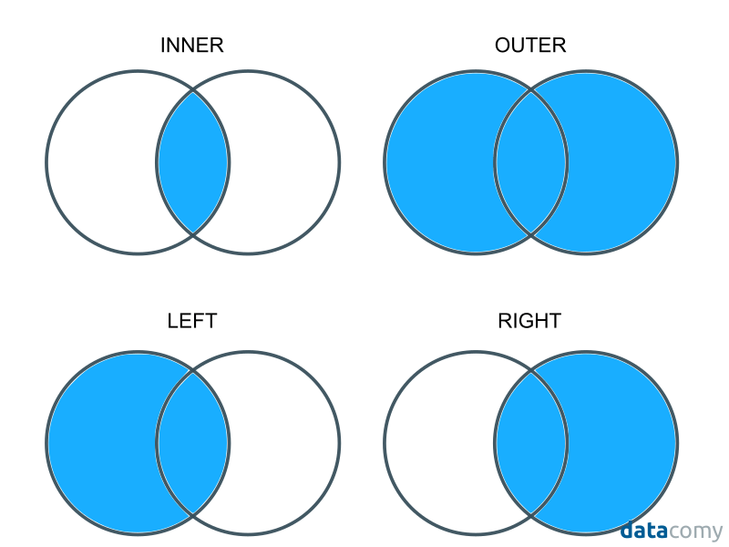

Merging Data¶
This tutorial explains how to combine different datasets through merging. Merging is basically a way of combining the columns from one dataset with those of another.
To illustrate the kind of situation where you may end up wanting to merge data, suppose that you are interested in how economic development affects democracy across countries, but all you have are two separate datasets, each with data on one of these two outcomes – say, economic data from the World Bank and political data from the Polity Project. In order to study how these things relate to one another, we need to combine these two data sets.
(If you don’t care about democracy, just imagine we’re talking about something you care about, like urban pollution levels instead of democracy scores! The logic is the same.)
In a previous reading, I argued that subsiding data is probably the most important skill you will learn as a data scientist. Being able to subset data carefully makes it possible to study how all sorts of outcomes vary across different groups.
Merging, I would argue, is the second most important skill for generating insights in data science. It is hard to overstate the value that comes from bringing together two disparate sources of information and studying how they relate to one another. This may surprise you coming from someone who teaches data science – most people would assume a data scientist believes value comes from fancy models – but in my experience, most insights come from documenting simple empirical regularities about the world that nobody has noticed before. We often use more sophisticated statistical modeling in order to evaluate the strength of relationships, and to help us understand what is driving those empirical regularities, but all of that work is secondary to just being able to measure basic features of the world. And merging is key to that process.
A Merging Example¶
To illustrate merging, let’s suppose that we want to do the analysis of the relationship between political outcomes and economic development we described above. Below we create to toy data sets, one with democracy scores (analogous to those you might get from a group like the Polity Project), and one with economic information (like the type of information you might get from the World Developing Indicators):
[12]:
# Generate toy dataset 1:
demo <- data.frame(
country = c("USA", "Albania", "Turkey", "China", "Sudan"),
democracy_score = c(19, 16, 16, 5, 10)
)
demo
| country | democracy_score |
|---|---|
| <chr> | <dbl> |
| USA | 19 |
| Albania | 16 |
| Turkey | 16 |
| China | 5 |
| Sudan | 10 |
[13]:
# Generate toy dataset 2:
econ <- data.frame(
country = c("China", "Albania", "Turkey", "USA", "Sudan"),
gdp_pc = c(12000, 10000, 9000, 20000, 500)
)
econ
| country | gdp_pc |
|---|---|
| <chr> | <dbl> |
| China | 12000 |
| Albania | 10000 |
| Turkey | 9000 |
| USA | 20000 |
| Sudan | 500 |
To merge two data sets, they must have an identifier in common – one or more columns whose values allow us to understand which rows are identifying the same entities in the two datasets. In the case of these two datasets, the common identifier is country name, stored in the column "country" in both datasets.
To do the actual merge, we will use R’s merge() command. merge() requires at least three arguments: the two datasets you want to merge, and the name of the column(s) containing the common identifier. In this case, our call to merge would look like this:
[4]:
df <- merge(demo, econ, by = "country")
df
| country | democracy_score | gdp_pc |
|---|---|---|
| <chr> | <dbl> | <dbl> |
| Albania | 16 | 10000 |
| China | 5 | 12000 |
| Sudan | 10 | 500 |
| Turkey | 16 | 9000 |
| USA | 19 | 20000 |
This is called a 1-to-1 merge because each row in the first dataset matches up to exactly one row in the second dataset – i.e. each country appears only once in the first dataset, and matches up to a single row in the second dataset (the row with the same country identifier).
Your common identifier may be spread across multiple columns. Consider the following example:
[22]:
# Generate toy dataset 1:
country <- rep(c("USA", "China", "Sudan", "India"), 2)
year <- c(1994, 1994, 1994, 1994, 1995, 1995, 1995, 1995)
democracy <- round(runif(8, 0, 20), 0)
demo <- data.frame(country, year, democracy)
demo
| country | year | democracy |
|---|---|---|
| <chr> | <dbl> | <dbl> |
| USA | 1994 | 9 |
| China | 1994 | 14 |
| Sudan | 1994 | 7 |
| India | 1994 | 8 |
| USA | 1995 | 4 |
| China | 1995 | 5 |
| Sudan | 1995 | 7 |
| India | 1995 | 0 |
[23]:
# Generate toy dataset 2:
econ <- data.frame(
expand.grid(year = 1994:1996, country = c("USA", "China", "Sudan")),
gdp_pc = round(runif(9, 1000, 20000), 0)
)
econ
| year | country | gdp_pc |
|---|---|---|
| <int> | <fct> | <dbl> |
| 1994 | USA | 10164 |
| 1995 | USA | 16980 |
| 1996 | USA | 19816 |
| 1994 | China | 4735 |
| 1995 | China | 13556 |
| 1996 | China | 18126 |
| 1994 | Sudan | 11141 |
| 1995 | Sudan | 18365 |
| 1996 | Sudan | 15422 |
In this situation, "country" does not fully identify which row is supposed to match up with which row across the two datasets, since we clearly want to match up the row for USA in 1994 in demo with the same row in econ.
To accommodate that, you can pass multiple columns to merge’s by argument. e.g.:
[24]:
merge(demo, econ, by = c("country", "year"))
| country | year | democracy | gdp_pc |
|---|---|---|---|
| <chr> | <dbl> | <dbl> | <dbl> |
| China | 1994 | 14 | 4735 |
| China | 1995 | 5 | 13556 |
| Sudan | 1994 | 7 | 11141 |
| Sudan | 1995 | 7 | 18365 |
| USA | 1994 | 9 | 10164 |
| USA | 1995 | 4 | 16980 |
What Rows Do You Keep?¶
As you may have noticed in the example above, our demo dataset had more years of data than our econ dataset (it included data from 1996, while econ did not), and econ included more countries than demo (namely: India). And when we merged the two datasets, only the country-year pairs that were common to both data sets were kept.
This is what’s referred to is an inner join, or inner merge (join and merge are different terms for the same thing). In an inner join, only rows whose identifiers are present in both datasets are kept in the final dataset. But one can also:
keep all rows (whether the match or not) with an outer join, or
keep matching rows + unmatched rows from your “left” dataset (the first dataframe you pass to
merge) with a left join, orkeep matching rows + unmatched rows from your “right” dataset (the second dataframe you pass to
merge) with a right join.
These four types of merges are nicely illustrated in this figure from datacomy:
By default, R doesn’t use the terms inner, outer, left, and right, but rather lets you specify what rows to keep with the arguments: all.x, all.y, or all. With none of those specified (as above), you get an inner join, but you can use these arguments to:
[27]:
# keep all rows, matching or not
# (outer join)
merge(demo, econ, by = c("country", "year"), all = TRUE)
| country | year | democracy | gdp_pc |
|---|---|---|---|
| <chr> | <dbl> | <dbl> | <dbl> |
| China | 1994 | 14 | 4735 |
| China | 1995 | 5 | 13556 |
| China | 1996 | NA | 18126 |
| India | 1994 | 8 | NA |
| India | 1995 | 0 | NA |
| Sudan | 1994 | 7 | 11141 |
| Sudan | 1995 | 7 | 18365 |
| Sudan | 1996 | NA | 15422 |
| USA | 1994 | 9 | 10164 |
| USA | 1995 | 4 | 16980 |
| USA | 1996 | NA | 19816 |
[28]:
# keep matching + unmatched in demo observations
# (Left join)
merge(demo, econ, by = c("country", "year"), all.x = TRUE)
| country | year | democracy | gdp_pc |
|---|---|---|---|
| <chr> | <dbl> | <dbl> | <dbl> |
| China | 1994 | 14 | 4735 |
| China | 1995 | 5 | 13556 |
| India | 1994 | 8 | NA |
| India | 1995 | 0 | NA |
| Sudan | 1994 | 7 | 11141 |
| Sudan | 1995 | 7 | 18365 |
| USA | 1994 | 9 | 10164 |
| USA | 1995 | 4 | 16980 |
As you can see, when you keep unmatched rows, R places NA values in entries that didn’t match, and so don’t have data for certain columns. We’ll talk about NAs in our missing data reading.
1-to-many merging¶
In our previous examples, the identifier we used clearly told R how to match each row of one dataset to exactly one row of the other dataset. We call this a 1-to-1 merge.
Sometimes, though, each row from one dataset may match up to multiple rows of the other. In these situations, we do a 1-to-many merge. Say, for example, we have the following two data frames:
[32]:
demo <- data.frame(
expand.grid(country = c("USA", "China", "Sudan"), year = 1994:1996),
democracy_score = round(runif(9, 0, 20), 0)
)
demo
| country | year | democracy_score |
|---|---|---|
| <fct> | <int> | <dbl> |
| USA | 1994 | 8 |
| China | 1994 | 16 |
| Sudan | 1994 | 5 |
| USA | 1995 | 2 |
| China | 1995 | 10 |
| Sudan | 1995 | 12 |
| USA | 1996 | 8 |
| China | 1996 | 3 |
| Sudan | 1996 | 2 |
[37]:
region <- data.frame(
country = c("USA", "China", "Sudan"),
region = c("America", "Asia", "Africa")
)
region
| country | region |
|---|---|
| <chr> | <chr> |
| USA | America |
| China | Asia |
| Sudan | Africa |
Because region doesn’t vary over time, we have only 1 entry per country in the region dataset, while we have many entries for each county in demo (one per country-year pair). And when we merge the datasets, we want all the rows in demo to get copies of the matching row in region.
This can be done with merge with no actual modifications to our code:
[38]:
merge(demo, region, by = "country")
| country | year | democracy_score | region |
|---|---|---|---|
| <fct> | <int> | <dbl> | <chr> |
| China | 1994 | 16 | Asia |
| China | 1995 | 10 | Asia |
| China | 1996 | 3 | Asia |
| Sudan | 1995 | 12 | Africa |
| Sudan | 1994 | 5 | Africa |
| Sudan | 1996 | 2 | Africa |
| USA | 1994 | 8 | America |
| USA | 1996 | 8 | America |
| USA | 1995 | 2 | America |
The Dangerous Ease of Merging¶
OK, at this point you’ve seen how to merge data using R’s merge function, and seen how easy it is to do. But, in my view, the fact that merging data is so easy is actually horrifyingly dangerous.
As discussed in our defensive programming reading, when working with real datasets we always have a model in our head about how our data is structured.
(Remember that in these exercises we play with little toy datasets that you can print out in their entirety to make it easy to understand what’s going on, but you can never actually look at all of your data we are working with thousands or hundreds of thousands of observations and tens or hundreds of variables.)
But it’s important always bear in mind that what we have in our heads is just that: a model, which may or may not be accurate.
I bring this up because merging is a great opportunity to test your model, and also a place where, if your model is wrong, you can get into a lot of trouble.
Suppose, for example, that we’re working with econ and demo and want to merge on country, and we’re assuming that country is a common identifier. But what we don’t notice is that the way the United States is represented in the two datasets is different:
[39]:
demo
| country | year | democracy_score |
|---|---|---|
| <fct> | <int> | <dbl> |
| USA | 1994 | 8 |
| China | 1994 | 16 |
| Sudan | 1994 | 5 |
| USA | 1995 | 2 |
| China | 1995 | 10 |
| Sudan | 1995 | 12 |
| USA | 1996 | 8 |
| China | 1996 | 3 |
| Sudan | 1996 | 2 |
[40]:
# Generate toy dataset 2:
econ <- data.frame(
expand.grid(year = 1994:1996, country = c("United States", "China", "Sudan")),
gdp_pc = round(runif(9, 1000, 20000), 0)
)
econ
| year | country | gdp_pc |
|---|---|---|
| <int> | <fct> | <dbl> |
| 1994 | United States | 7833 |
| 1995 | United States | 8159 |
| 1996 | United States | 18529 |
| 1994 | China | 12370 |
| 1995 | China | 7783 |
| 1996 | China | 3246 |
| 1994 | Sudan | 11507 |
| 1995 | Sudan | 10859 |
| 1996 | Sudan | 15209 |
Now if we try and merge these datasets, and we do an inner join:
[35]:
merge(econ, demo, by = c("country", "year"))
| country | year | gdp_pc | democracy_score |
|---|---|---|---|
| <fct> | <int> | <dbl> | <dbl> |
| China | 1994 | 13508 | 16 |
| China | 1995 | 7113 | 10 |
| China | 1996 | 2815 | 3 |
| Sudan | 1994 | 7809 | 5 |
| Sudan | 1995 | 2433 | 12 |
| Sudan | 1996 | 11809 | 2 |
… oops. We just dropped the US from our analysis. No error messages, no warnings; it’s just gone.
Again, this is obvious here, but what if you had 180 countries in your data, and 10 years instead of 3 – that’d be 1,800 observations. You wouldn’t just see it.
Similarly, because it doesn’t seem like regions would change over time, you assume that your region dataset has one observation per country, but in actuality at some point in the past the United Nations changed region designations, and so the dataset includes one entry per country-year:
[41]:
region <- data.frame(
country = c("USA", "China", "Sudan"),
region = c("America", "Asia", "Africa"),
year = c(1994, 1994, 1994, 1995, 1995, 1995, 1996, 1996, 1996)
)
region
| country | region | year |
|---|---|---|
| <chr> | <chr> | <dbl> |
| USA | America | 1994 |
| China | Asia | 1994 |
| Sudan | Africa | 1994 |
| USA | America | 1995 |
| China | Asia | 1995 |
| Sudan | Africa | 1995 |
| USA | America | 1996 |
| China | Asia | 1996 |
| Sudan | Africa | 1996 |
Now if you merged this dataset with demo on "country" like we did above, this is what would happen:
[42]:
merge(demo, region, by = "country")
| country | year.x | democracy_score | region | year.y |
|---|---|---|---|---|
| <fct> | <int> | <dbl> | <chr> | <dbl> |
| China | 1994 | 16 | Asia | 1994 |
| China | 1994 | 16 | Asia | 1995 |
| China | 1994 | 16 | Asia | 1996 |
| China | 1995 | 10 | Asia | 1994 |
| China | 1995 | 10 | Asia | 1995 |
| China | 1995 | 10 | Asia | 1996 |
| China | 1996 | 3 | Asia | 1994 |
| China | 1996 | 3 | Asia | 1995 |
| China | 1996 | 3 | Asia | 1996 |
| Sudan | 1995 | 12 | Africa | 1995 |
| Sudan | 1995 | 12 | Africa | 1994 |
| Sudan | 1995 | 12 | Africa | 1996 |
| Sudan | 1994 | 5 | Africa | 1995 |
| Sudan | 1994 | 5 | Africa | 1994 |
| Sudan | 1994 | 5 | Africa | 1996 |
| Sudan | 1996 | 2 | Africa | 1995 |
| Sudan | 1996 | 2 | Africa | 1994 |
| Sudan | 1996 | 2 | Africa | 1996 |
| USA | 1994 | 8 | America | 1994 |
| USA | 1994 | 8 | America | 1996 |
| USA | 1994 | 8 | America | 1995 |
| USA | 1996 | 8 | America | 1994 |
| USA | 1996 | 8 | America | 1996 |
| USA | 1996 | 8 | America | 1995 |
| USA | 1995 | 2 | America | 1994 |
| USA | 1995 | 2 | America | 1996 |
| USA | 1995 | 2 | America | 1995 |
…oops. Now each country-year appears three times in our data! If we try to analyze this statistically, these repeat observations would make our results meaningless.
And again, no warnings, no error messages.
Merging with Checks¶
To solve this problem, I am going to advocate that instead of you using the default merge() function for merging in R, you use the join() function provided by the statar package.
statar implements a number of safety features that are default in most other languages (in this case, the author is inspired by Stata, thus the name):
You can tell it whether you think you’re doing a 1-to-1, many-to-1, 1-to-many, or many-to-many merge, and it will check the data to see if you are correct and raise a warning if not.
It provides a diagnostic tool for evaluating whether your merges were successful or not to catch situations like the
USA/United Statessituation described above.Requires you explicitly state the kind of merge (specified with the
kindargument) you want to do so you don’t mindlessly do an inner join when you shouldn’t.
To begin, let’s try our region merge again with statar. We think we’re doing a many-to-1 merge (we expect several country-year pairs in demo to each match to one row in region), so we use check = m~1:
[50]:
# Load statar.
# You'll have to install first.
library(statar)
[51]:
join(demo, region, kind = "inner", on = "country", check = m~1)
Error: Variable(s) country don't uniquely identify observations in y
Traceback:
1. join(demo, region, kind = "inner", on = "country", check = m ~
. 1)
2. stop(paste0("Variable(s) ", paste(vars, collapse = " "), " don't uniquely identify observations in y"),
. call. = FALSE)
join(demo, region, kind = "inner", on = "country", check = 1~1)
> ERROR: Error: Variable(s) country don't uniquely identify observations in y
> Error: Variable(s) country don't uniquely identify observations in y
> Traceback:
>
> 1. join(demo, region, kind = "inner", on = "country", check = m ~
> . 1)
> 2. stop(paste0("Variable(s) ", paste(vars, collapse = " "), " don't uniquely identify observations in y"),
> . call. = FALSE)
Ta-da! It points out that country doesn’t uniquely identify rows in our region dataset! Now we know we have a problem, and we won’t make a dataset full of duplicate entries.
Now we can make use of the other tool in statar. As a rule, I basically never do inner joins, because with an inner join any problems with the merge – e.g. rows you expected to merge that didn’t – get dropped, masking any problems.
Instead, I strongly recommend always doing an outer join (kind = "full" in statar – I know, why can’t everyone use the same terminology?!), and then checking the diagnostic information provided by join:
[56]:
# Do our merge with US problem
# as an outer ("full") merge.
# `gen="_merge"` will now add a column
# to our data with diagnostic info.
merged_data <- join(econ, demo, on = c("country", "year"),
kind = "full", gen = "merge_check")
merged_data
Joining, by = c("year", "country")
| year | country | gdp_pc | democracy_score | merge_check |
|---|---|---|---|---|
| <int> | <fct> | <dbl> | <dbl> | <int> |
| 1994 | United States | 7833 | NA | 1 |
| 1995 | United States | 8159 | NA | 1 |
| 1996 | United States | 18529 | NA | 1 |
| 1994 | China | 12370 | 16 | 3 |
| 1995 | China | 7783 | 10 | 3 |
| 1996 | China | 3246 | 3 | 3 |
| 1994 | Sudan | 11507 | 5 | 3 |
| 1995 | Sudan | 10859 | 12 | 3 |
| 1996 | Sudan | 15209 | 2 | 3 |
| 1994 | USA | NA | 8 | 2 |
| 1995 | USA | NA | 2 | 2 |
| 1996 | USA | NA | 8 | 2 |
As you can see, join has added a column called _merge with values of 1, 2, and 3. The meaning of these is:
1: Row in left dataset, no match in right dataset.2: Row in right dataset, no match in left dataset.3: Row merged successfully.
We can now check these values with table():
[57]:
table(merged_data$merge_check)
1 2 3
3 3 6
And we can add tests here too! For example, if we expected everything to merge correctly, we can add the following test (again, see defensive programming reading for discussion of tests):
[58]:
library(assertthat)
assert_that(all(merged_data$merge_check == 3))
> ERROR: Error: Elements 1, 2, 3, 10, 11, 12 of merged_data$merge_check == 3 are not true
> Error: Elements 1, 2, 3, 10, 11, 12 of merged_data$merge_check == 3 are not true
> Traceback:
>
> 1. assert_that(all(merged_data$merge_check == 3))
And now we know something went wrong. What went wrong? Let’s look at the rows that didn’t merge!
[60]:
merged_data[merged_data$merge_check != 3,]
| year | country | gdp_pc | democracy_score | merge_check | |
|---|---|---|---|---|---|
| <int> | <fct> | <dbl> | <dbl> | <int> | |
| 1 | 1994 | United States | 7833 | NA | 1 |
| 2 | 1995 | United States | 8159 | NA | 1 |
| 3 | 1996 | United States | 18529 | NA | 1 |
| 10 | 1994 | USA | NA | 8 | 2 |
| 11 | 1995 | USA | NA | 2 | 2 |
| 12 | 1996 | USA | NA | 8 | 2 |
Well there you go then! We can immediately see the problem.
But what if I want to do an inner, left, or right join?
Simple! Do the outer join, then drop the rows you don’t want using your merge_check variable. e.g. for an inner join, you can do merged_data = merged_data[merged_data$merge_check == 3,], for a left join you can do merged_data = merged_data[merged_data$merge_check != 2,], etc. But crucially, you can now do these after you’ve made sure nothing crazy happened in your merge by looking at the merge_check values.
Exercises¶
Warm-up: Merge the three data frames defined below. Your final data frame should have 9 rows and 5 columns. Hint: merge only two data frames at a time.
[14]:
df1 <- data.frame(
name = c("Mary", "Thor", "Sven", "Jane", "Ake", "Stephan",
"Bjorn", "Oden", "Dennis"),
treatment_gr = c(rep(c(1, 2, 3), each = 3)),
weight_p1 = round(runif(9, 100, 200), 0)
)
df2 <- data.frame(
name = c("Sven", "Jane", "Ake", "Mary", "Thor", "Stephan",
"Oden", "Bjorn"),
weight_p2 = round(runif(8, 100, 200), 0)
)
df3 <- data.frame(
treatment_gr = c(1, 2, 3),
type = c("dog-lovers", "cat-lovers", "all-lovers")
)
More extensive: A prominent economic theory predicts that higher income inequality should be associated with more redistribution from the rich to the poor (Meltzer and Richard 1981). Let’s create a dataset that will allow us to test this prediction using U.S. state-level data.
Download data on inequality and tax collection (links below). Take a moment to familiarize yourself with the codebooks. Then read each dataset into R.
Dataset with six measures of inequality (originally from Mark W. Frank).
Tax data that can be used to measure fiscal capacity/redistribution. Use the “State Government Tax Collections” link.
Keep only the Year, State, Name, Total Taxes, and Total Income Taxes variables in the tax dataset, and rename these if necessary. Keep all the variables in the inequality dataset. Subset both datasets to be in the year range 1960-2012.
Merge the two datasets. Take a moment to think about how to do this. Your final dataset should have 2650 rows and 12 variables. (Keep only data on the 50 states; 50 states x 53 years = 2650 observations.) Hint: You may find this dataset with state identifiers helpful.
The Total Tax and Total Income Tax variables from the tax dataset have commas in them, and are therefore not numeric. Remove the commas and convert the variables to numeric. Hint:
gsub().